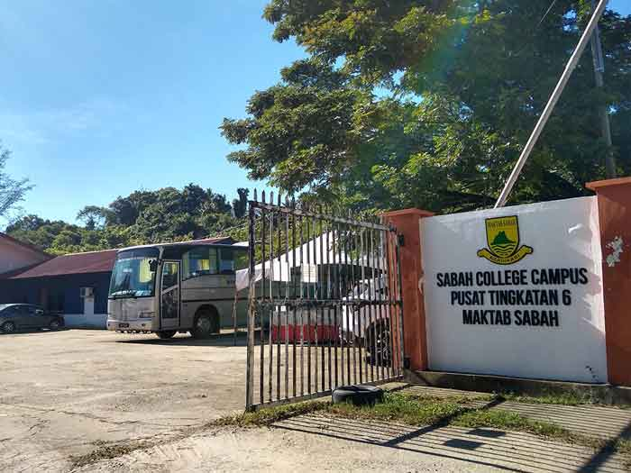

My Education
|

|
Sijil Tinggi Pelajaran Malaysia/Malaysian Higher School Certificate
Pusat Tingkatan Enam Maktab Sabah/Sabah College Campus
July 2021 - February 2023
-
Took the Arts/Humanities Stream with a focus on
General Studies, ICT, Economy, and Visual Arts, along with MUET.
-
Represented my school in Chess during KASTENA (Karnival Sukan Tingkatan Enam).
-
Appointed as the Multimedia Exco for Kelana Scouts, managing multimedia tasks during community
service activities.
-
Appointed as Class Representative, leading and coordinating class activities and communication
between students and teachers.
|
|
|
Sijil Pelajaran Malaysia/Malaysia Certificate of Education
Sekolah Menengah Maktab Sabah
January 2016 - February 2021
- Took the Science Stream with a focus on Biology,
Chemistry, and Physics, along with Japanese Language as an elective for SPM.
-
Hosted Osaka Nougei High School representatives,
promoting cultural exchange and collaboration.
-
Participated in the Sarawak Bon Fest at Miri, Sarawak and emerged as winner in one of the quiz competition.
|
|